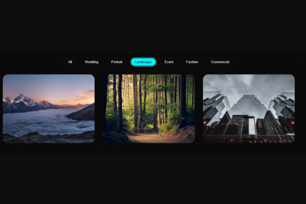

OnFiNtY Photography Portfolio
A feature-rich and visually dynamic portfolio for a professional photographer, featuring advanced JavaScript functionalities like a filterable gallery, a custom image modal, and a testimonial slider.
Project Overview
Dynamic & Energetic UI
A modern, dark-themed design that uses vibrant neon accents, animated particles, and elegant typography to create a captivating user experience.
Fully Interactive Gallery
The portfolio features category filters, staggered load animations, and a custom-built lightbox modal for a seamless and professional viewing experience.
Feature-Complete
A comprehensive single-page application with a dynamic stats counter, an auto-playing testimonial slider, and a contact form with full client-side validation.
Key Features

"Interactive Portfolio Filtering"
Users can instantly filter the gallery by category (Wedding, Portrait, etc.) with smooth transitions, making it easy to navigate through the work.
.png)
"Full-Featured Image Modal"
Clicking an image opens a custom lightbox with keyboard navigation (arrows and escape key) for an immersive viewing experience.
.png)
"Animated Statistics Counter"
Statistics in the 'About Me' section dynamically count up when they scroll into view, adding a lively and impressive touch to the content.
.png)
"Satisfying Button Ripple Effect"
Every button provides satisfying tactile feedback with a 'ripple' effect that emanates from the point of click, enhancing the user interaction.
Technical Implementation
JavaScript Module Pattern
All JavaScript is encapsulated within a single module, preventing global namespace pollution and making the code highly organized.
Dynamic Particle Background (JS)
The floating background particles are dynamically generated and randomized by a JavaScript function on page load for a unique feel.
Custom-Built Slider & Modal (JS)
The testimonial slider and portfolio lightbox are built from scratch with vanilla JavaScript, without relying on external libraries.
Advanced Form Handling
The contact form includes robust client-side validation and provides clear loading and success/error feedback to the user.
Performance with Lazy Loading
Images use native `loading="lazy"` and an Intersection Observer, ensuring they only load when needed to speed up the site.
Accessibility Considerations
The site respects `prefers-reduced-motion` to disable animations and uses ARIA attributes on interactive elements like the modal.
Design & Development Details
Color Scheme: An energetic and modern dark theme (#0a0a0a) with vibrant cyan (#00f5ff) and coral (#ff6b6b) gradient accents.
Layout: A comprehensive, multi-section portfolio layout built with responsive CSS Grid and Flexbox.
Animations: A full suite of JS-driven and CSS animations, including particles, a ripple effect, a custom slider, and number counters.
Skills Demonstrated: Advanced JS (Modules, Sliders, Modals, Validation), Modern CSS (Grid, Animations), UI/UX, Performance, Accessibility.
Time taken to build: A project with this many custom features from scratch would take approximately 50-65 hours.
Pricing: For a top-tier, custom portfolio site like this, my personal pricing would be in the $500 - $1000 range.